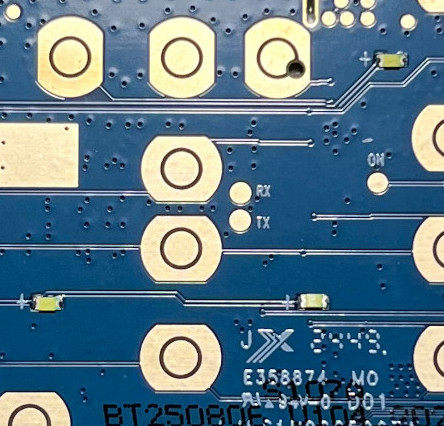
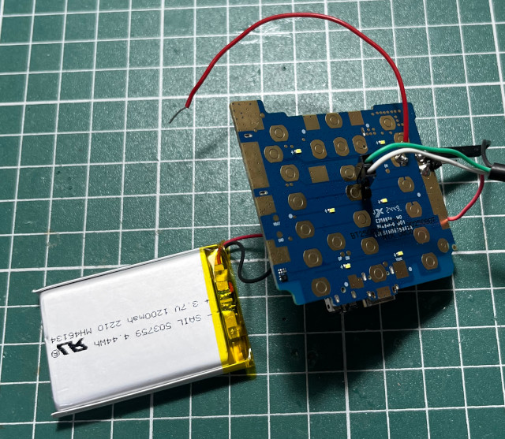

腳位


&RV1 UUUUUNBL NRS RBS DDR init start sdram_clk_init begin dmc_dll_init end lpddr_powerup_init end dmc_init_post_setting end qos init end DDR init OK boot0 started!: 144 boot0 UART/JTAG mode = 2 boot0 nand flash ID 0x81c8! load boot1 suc run boot1:17e boot1 started!: 186 rst_monitor_register is 0 TFLOAD_FLAG:0x0 hw_flag 0 kernel img size : 12674720 load kernel suc run kernel:4cd